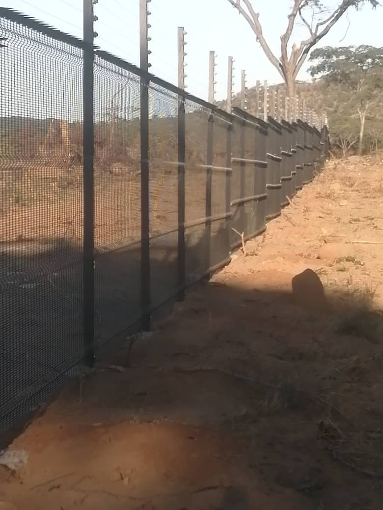

Protect your solar investment with the right perimeter fencing — keeping your installation secure and operational.

Perimeter protection and boundary fencing for solar farms and renewable energy installations across Zimbabwe.
Azzar provides a complete end-to-end service including site assessment, material supply, transportation, delivery, professional installation, and after-sales support — so you can focus on your core business.
We review your location, boundary requirements and project objective before recommending a suitable fencing category.
We confirm the material scope, delivery arrangements and quotation details for your specific location.
Where installation is required, the agreed service scope and site requirements are confirmed before work begins.
Solar panels, inverters and batteries are valuable and often installed on open land, so a secure perimeter is an important part of any solar project.
Azzar provides clearview fencing, diamond mesh and razor wire for solar farms, rooftop plant areas, battery rooms and renewable energy installations across Zimbabwe.
Panels, cables and batteries are targets, so climb resistance is important.
Solar farms are often on large, exposed sites that need long boundaries.
See-through fencing avoids shading and keeps the site visible to cameras.
Gates must allow vehicles in for cleaning and servicing.